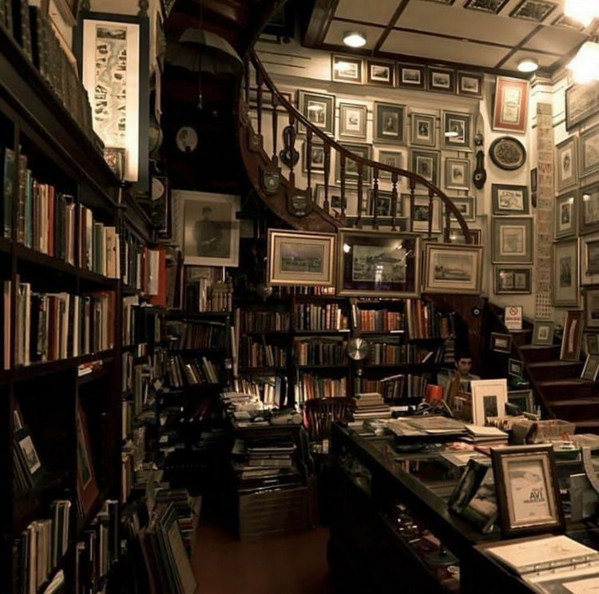

Nuestra Historia
Ramé Editorial nació en 2022 como un sueño compartido entre amantes de la literatura que creían que los libros no solo cuentan historias, sino que transforman vidas.
El nombre "Ramé" surge de la combinación de raíces culturales y pasión por las letras. Desde el inicio, nuestro propósito fue dar voz a nuevos autores y rescatar historias auténticas.
Hoy, Ramé Editorial se proyecta como una casa literaria moderna e innovadora comprometida con la calidad.